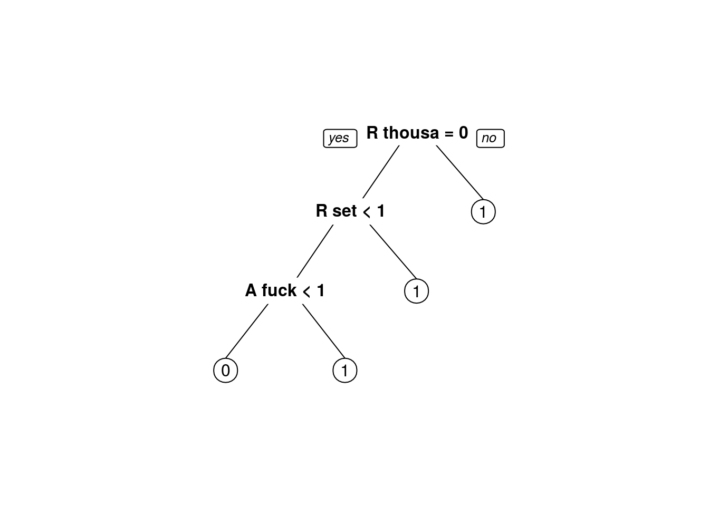
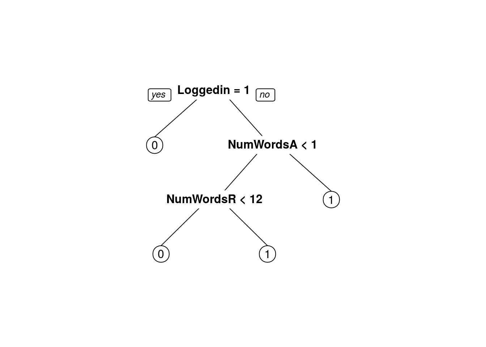

Wikipedia is a free online encyclopedia that anyone can edit and contribute to. It’s available in many languages and is growing all the time. On the English language version of Wikipedia:
- There are currently 4.7 million pages.
- There have been a total over 760 million edits (also called revisions) over its lifetime.
- There are approximately 130,000 edits per day.
One of the consequences of being editable by anyone is that some people vandalize pages.
This can take the form of removing content, adding promotional or inappropriate content, or more subtle shifts that change the meaning of the article.
With these many articles and edits per day it is difficult for humans to detect all instances of vandalism and revert (undo) them. As a result, Wikipedia uses bots - computer programs that automatically revert edits that look like vandalism. In this analysis I’ll attempt to develop a vandalism detector that uses ML to distinguish between a valid edit and vandalism.
The data for this analysis is based on the revision history of the page Language. Wikipedia provides a history for each page that consists of the state of the page at each revision. Rather than manually considering each revision, a script was run that checked whether edits stayed or were reverted. If a change was eventually reverted then that revision is marked as vandalism. This may result in some misclassifications, but the script performs well enough for our needs.
As a result of this preprocessing, some common processing tasks have already been done, including lower-casing and punctuation removal. The columns in the dataset are:
- Vandal = 1 if this edit was vandalism, 0 if not.
- Minor = 1 if the user marked this edit as a “minor edit”, 0 if not.
- Loggedin = 1 if the user made this edit while using a Wikipedia account, 0 if they did not.
- Added = The unique words added.
- Removed = The unique words removed.
Notice the repeated use of unique. The data we have available is not the traditional bag of words - rather it is the set of words that were removed or added. For example, if a word was removed multiple times in a revision it will only appear one time in the “Removed” column.
Loading the packages
# install packages if necessary
list.of.packages <- c("SnowballC")
new.packages <- list.of.packages[!(list.of.packages %in% installed.packages()[,"Package"])]
if(length(new.packages)) install.packages(new.packages)
## load packages
library(tm)Loading required package: NLPlibrary(SnowballC)
library(caTools) # to use sample.split function.
library(rpart)
library(rpart.plot)
library(ROCR)Loading required package: gplots
Attaching package: 'gplots'The following object is masked from 'package:stats':
lowessProblem 1.1 - Bags of Words
Load the data wiki.csv with the option stringsAsFactors=FALSE, calling the dataframe “wiki”. Convert the “Vandal” column to a factor using the code wiki\(Vandal = as.factor(wiki\)Vandal).
wiki <- read.csv("wiki.csv", stringsAsFactors = FALSE)
wiki$Vandal <- as.factor(wiki$Vandal)
str(wiki)'data.frame': 3876 obs. of 7 variables:
$ X.1 : int 1 2 3 4 5 6 7 8 9 10 ...
$ X : int 1 2 3 4 5 6 7 8 9 10 ...
$ Vandal : Factor w/ 2 levels "0","1": 1 1 1 1 1 1 1 1 1 1 ...
$ Minor : int 1 1 0 1 1 0 0 0 1 0 ...
$ Loggedin: int 1 1 1 0 1 1 1 1 1 0 ...
$ Added : chr " represent psycholinguisticspsycholinguistics orthographyorthography help text all actions through human ethno"| __truncated__ " website external links" " " " afghanistan used iran mostly that farsiis is countries some xmlspacepreservepersian parts tajikestan region" ...
$ Removed : chr " " " talklanguagetalk" " regarded as technologytechnologies human first" " represent psycholinguisticspsycholinguistics orthographyorthography help all actions through ethnologue relat"| __truncated__ ...How many cases of vandalism were detected in the history of this page?
table(wiki$Vandal)
0 1
2061 1815 1815
Problem 1.2 - Bags of Words
We will now use the bag of words approach to build a model. We have two columns of textual data, with different meanings. For example, adding rude words has a different meaning to removing rude words. The text already is lowercase and stripped of punctuation. So to pre-process the data, just complete the following four steps:
# 1) Create the corpus for the Added column, and call it "corpusAdded".
corpusAdded <- Corpus(VectorSource(wiki$Added))
corpusAdded[[1]]$content[1] " represent psycholinguisticspsycholinguistics orthographyorthography help text all actions through human ethnologue relationships linguistics regarded writing languages to other listing xmlspacepreservelanguages metaverse formal term philology common each including phonologyphonology often ten list humans affiliation see computer are speechpathologyspeech our what for ways dialects please artificial written body be of quite hypothesis found alone refers by about language profanity study programming priorities rosenfelders technologytechnologies makes or first among useful languagephilosophy one sounds use area create phrases mark their genetic basic families complete but sapirwhorfhypothesissapirwhorf with talklanguagetalk population animals this science up vocal can concepts called at and topics locations as numbers have in pathology different develop 4000 things ideas grouped complex animal mathematics fairly literature httpwwwzompistcom philosophy most important meaningful a historicallinguisticsorphilologyhistorical semanticssemantics patterns the oral"# 2) Remove the English-language stopwords.
corpusAdded <- tm_map(corpusAdded, removeWords, stopwords("english"))Warning in tm_map.SimpleCorpus(corpusAdded, removeWords,
stopwords("english")): transformation drops documentscorpusAdded[[1]]$content[1] " represent psycholinguisticspsycholinguistics orthographyorthography help text actions human ethnologue relationships linguistics regarded writing languages listing xmlspacepreservelanguages metaverse formal term philology common including phonologyphonology often ten list humans affiliation see computer speechpathologyspeech ways dialects please artificial written body quite hypothesis found alone refers language profanity study programming priorities rosenfelders technologytechnologies makes first among useful languagephilosophy one sounds use area create phrases mark genetic basic families complete sapirwhorfhypothesissapirwhorf talklanguagetalk population animals science vocal can concepts called topics locations numbers pathology different develop 4000 things ideas grouped complex animal mathematics fairly literature httpwwwzompistcom philosophy important meaningful historicallinguisticsorphilologyhistorical semanticssemantics patterns oral"# 3) Stem the words.
corpusAdded <- tm_map(corpusAdded, stemDocument)Warning in tm_map.SimpleCorpus(corpusAdded, stemDocument): transformation
drops documentscorpusAdded[[1]]$content[1] "repres psycholinguisticspsycholinguist orthographyorthographi help text action human ethnologu relationship linguist regard write languag list xmlspacepreservelanguag metavers formal term philolog common includ phonologyphonolog often ten list human affili see comput speechpathologyspeech way dialect pleas artifici written bodi quit hypothesi found alon refer languag profan studi program prioriti rosenfeld technologytechnolog make first among use languagephilosophi one sound use area creat phrase mark genet basic famili complet sapirwhorfhypothesissapirwhorf talklanguagetalk popul anim scienc vocal can concept call topic locat number patholog differ develop 4000 thing idea group complex anim mathemat fair literatur httpwwwzompistcom philosophi import meaning historicallinguisticsorphilologyhistor semanticssemant pattern oral"# 4) Build the DocumentTermMatrix, and call it dtmAdded.
dtmAdded = DocumentTermMatrix(corpusAdded)
dtmAdded<<DocumentTermMatrix (documents: 3876, terms: 6675)>>
Non-/sparse entries: 15368/25856932
Sparsity : 100%
Maximal term length: 784
Weighting : term frequency (tf)How many terms appear in dtmAdded? #### 6675
If the code length(stopwords(“english”)) does not return 174 for you, then please run the line of code in this file, which will store the standard stop words in a variable called sw. When removing stop words, use tm_map(corpusAdded, removeWords, sw) instead of tm_map(corpusAdded, removeWords, stopwords(“english”)).
length(stopwords("english"))[1] 174Problem 1.3 - Bags of Words
Filter out sparse terms by keeping only terms that appear in 0.3% or more of the revisions, and call the new matrix sparseAdded.
sparseAdded <- removeSparseTerms(dtmAdded, 0.997)
sparseAdded<<DocumentTermMatrix (documents: 3876, terms: 166)>>
Non-/sparse entries: 2681/640735
Sparsity : 100%
Maximal term length: 28
Weighting : term frequency (tf)How many terms appear in sparseAdded? #### 166
Problem 1.4 - Bags of Words
Convert sparseAdded to a dataframe called wordsAdded, and then prepend all the words with the letter A, by using the code:
wordsAdded <- as.data.frame(as.matrix(sparseAdded))
colnames(wordsAdded) <- paste("A", colnames(wordsAdded))
str(wordsAdded)'data.frame': 3876 obs. of 166 variables:
$ A bodi : num 1 0 0 0 1 0 0 0 0 0 ...
$ A call : num 1 0 0 0 1 0 0 0 0 0 ...
$ A complet : num 1 0 0 0 1 0 0 0 0 0 ...
$ A concept : num 1 0 0 0 1 0 0 0 0 0 ...
$ A creat : num 1 0 0 0 1 0 0 0 0 0 ...
$ A develop : num 1 0 0 0 1 0 0 0 0 0 ...
$ A differ : num 1 0 0 0 1 0 0 0 0 0 ...
$ A famili : num 1 0 0 0 1 0 0 0 0 0 ...
$ A first : num 1 0 0 0 0 0 0 0 0 0 ...
$ A group : num 1 0 0 0 1 0 0 0 0 0 ...
$ A help : num 1 0 0 0 1 0 0 0 0 0 ...
$ A idea : num 1 0 0 0 1 0 0 0 0 0 ...
$ A import : num 1 0 0 0 1 0 0 0 0 0 ...
$ A includ : num 1 0 0 0 1 0 0 0 0 0 ...
$ A linguist : num 1 0 0 0 1 0 0 0 0 0 ...
$ A make : num 1 0 0 0 1 0 0 0 0 0 ...
$ A number : num 1 0 0 0 1 0 0 0 0 0 ...
$ A pattern : num 1 0 0 0 1 0 0 0 0 0 ...
$ A popul : num 1 0 0 0 1 0 0 0 0 0 ...
$ A refer : num 1 0 0 0 1 0 0 0 0 0 ...
$ A relationship : num 1 0 0 0 1 0 0 0 0 0 ...
$ A repres : num 1 0 0 0 1 0 0 0 0 0 ...
$ A sound : num 1 0 0 0 1 0 0 0 0 0 ...
$ A studi : num 1 0 0 0 1 0 0 0 0 0 ...
$ A ten : num 1 0 0 0 1 0 0 0 0 0 ...
$ A use : num 2 0 0 1 2 0 0 0 0 0 ...
$ A write : num 1 0 0 0 1 0 0 0 0 0 ...
$ A part : num 0 0 0 1 0 0 0 0 0 0 ...
$ A name : num 0 0 0 0 0 0 0 0 0 0 ...
$ A communic : num 0 0 0 0 0 0 0 0 0 0 ...
$ A defin : num 0 0 0 0 0 0 0 0 0 0 ...
$ A express : num 0 0 0 0 0 0 0 0 0 0 ...
$ A mean : num 0 0 0 0 0 0 0 0 0 0 ...
$ A must : num 0 0 0 0 0 0 0 0 0 0 ...
$ A set : num 0 0 0 0 0 0 0 0 0 0 ...
$ A featur : num 0 0 0 0 0 0 0 0 0 0 ...
$ A form : num 0 0 0 0 0 0 0 0 0 0 ...
$ A symbol : num 0 0 0 0 0 0 0 0 0 0 ...
$ A talk : num 0 0 0 0 0 0 0 0 0 0 ...
$ A type : num 0 0 0 0 0 0 0 0 0 0 ...
$ A learn : num 0 0 0 0 0 0 0 0 0 0 ...
$ A general : num 0 0 0 0 0 0 0 0 0 0 ...
$ A exampl : num 0 0 0 0 0 0 0 0 0 0 ...
$ A provid : num 0 0 0 0 0 0 0 0 0 0 ...
$ A speak : num 0 0 0 0 0 0 0 0 0 0 ...
$ A thought : num 0 0 0 0 0 0 0 0 0 0 ...
$ A cours : num 0 0 0 0 0 0 0 0 0 0 ...
$ A german : num 0 0 0 0 0 0 0 0 0 0 ...
$ A onlin : num 0 0 0 0 0 0 0 0 0 0 ...
$ A biolog : num 0 0 0 0 0 0 0 0 0 0 ...
$ A close : num 0 0 0 0 0 0 0 0 0 0 ...
$ A communiti : num 0 0 0 0 0 0 0 0 0 0 ...
$ A distinct : num 0 0 0 0 0 0 0 0 0 0 ...
$ A dutch : num 0 0 0 0 0 0 0 0 0 0 ...
$ A intellig : num 0 0 0 0 0 0 0 0 0 0 ...
$ A least : num 0 0 0 0 0 0 0 0 0 0 ...
$ A note : num 0 0 0 0 0 0 0 0 0 0 ...
$ A parallel : num 0 0 0 0 0 0 0 0 0 0 ...
$ A possibl : num 0 0 0 0 0 0 0 0 0 0 ...
$ A principl : num 0 0 0 0 0 0 0 0 0 0 ...
$ A sentenc : num 0 0 0 0 0 0 0 0 0 0 ...
$ A standard : num 0 0 0 0 0 0 0 0 0 0 ...
$ A stem : num 0 0 0 0 0 0 0 0 0 0 ...
$ A understood : num 0 0 0 0 0 0 0 0 0 0 ...
$ A utter : num 0 0 0 0 0 0 0 0 0 0 ...
$ A arbitrari : num 0 0 0 0 0 0 0 0 0 0 ...
$ A combin : num 0 0 0 0 0 0 0 0 0 0 ...
$ A cultur : num 0 0 0 0 0 0 0 0 0 0 ...
$ A discuss : num 0 0 0 0 0 0 0 0 0 0 ...
$ A invent : num 0 0 0 0 0 0 0 0 0 0 ...
$ A properti : num 0 0 0 0 0 0 0 0 0 0 ...
$ A research : num 0 0 0 0 0 0 0 0 0 0 ...
$ A unit : num 0 0 0 0 0 0 0 0 0 0 ...
$ A work : num 0 0 0 0 0 0 0 0 0 0 ...
$ A direct : num 0 0 0 0 0 0 0 0 0 0 ...
$ A relat : num 0 0 0 0 0 0 0 0 0 0 ...
$ A agre : num 0 0 0 0 0 0 0 0 0 0 ...
$ A exist : num 0 0 0 0 0 0 0 0 0 0 ...
$ A wide : num 0 0 0 0 0 0 0 0 0 0 ...
$ A describ : num 0 0 0 0 0 0 0 0 0 0 ...
$ A literari : num 0 0 0 0 0 0 0 0 0 0 ...
$ A purpos : num 0 0 0 0 0 0 0 0 0 0 ...
$ A fantasi : num 0 0 0 0 0 0 0 0 0 0 ...
$ A promin : num 0 0 0 0 0 0 0 0 0 0 ...
$ A manipul : num 0 0 0 0 0 0 0 0 0 0 ...
$ A tolkien : num 0 0 0 0 0 0 0 0 0 0 ...
$ A follow : num 0 0 0 0 0 0 0 0 0 0 ...
$ A regular : num 0 0 0 0 0 0 0 0 0 0 ...
$ A gestur : num 0 0 0 0 0 0 0 0 0 0 ...
$ A similar : num 0 0 0 0 0 0 0 0 0 0 ...
$ A imposs : num 0 0 0 0 0 0 0 0 0 0 ...
$ A interact : num 0 0 0 0 0 0 0 0 0 0 ...
$ A person : num 0 0 0 0 0 0 0 0 0 0 ...
$ A reason : num 0 0 0 0 0 0 0 0 0 0 ...
$ A writer : num 0 0 0 0 0 0 0 0 0 0 ...
$ A phenomenon : num 0 0 0 0 0 0 0 0 0 0 ...
$ A accord : num 0 0 0 0 0 0 0 0 0 0 ...
$ A individu : num 0 0 0 0 0 0 0 0 0 0 ...
$ A object : num 0 0 0 0 0 0 0 0 0 0 ...
[list output truncated]Now repeat all of the steps we’ve done so far (create a corpus, remove stop words, stem the document, create a sparse document term matrix, and convert it to a dataframe) to create a Removed bag-of-words dataframe, called wordsRemoved, except this time, prepend all of the words with the letter R:
# 1) Create the corpus for the Removed column, and call it "corpusRemoved".
corpusRemoved <- Corpus(VectorSource(wiki$Removed))
corpusRemoved[[3]]$content[1] " regarded as technologytechnologies human first"# 2) Remove the English-language stopwords.
corpusRemoved <- tm_map(corpusRemoved, removeWords, stopwords("english"))Warning in tm_map.SimpleCorpus(corpusRemoved, removeWords,
stopwords("english")): transformation drops documentscorpusRemoved[[3]]$content[1] " regarded technologytechnologies human first"# 3) Stem the words.
corpusRemoved <- tm_map(corpusRemoved, stemDocument)Warning in tm_map.SimpleCorpus(corpusRemoved, stemDocument): transformation
drops documentscorpusRemoved[[3]]$content[1] "regard technologytechnolog human first"# 4) Build the DocumentTermMatrix, and call it dtmRemoved.
dtmRemoved <- DocumentTermMatrix(corpusRemoved)
dtmRemoved<<DocumentTermMatrix (documents: 3876, terms: 5403)>>
Non-/sparse entries: 13293/20928735
Sparsity : 100%
Maximal term length: 784
Weighting : term frequency (tf)# 5) Sparse document term matrix
sparseRemoved <- removeSparseTerms(dtmRemoved, 0.997)
sparseRemoved<<DocumentTermMatrix (documents: 3876, terms: 162)>>
Non-/sparse entries: 2552/625360
Sparsity : 100%
Maximal term length: 28
Weighting : term frequency (tf)# 6) Create dataframe and preppend the colnames with the letter "R"
wordsRemoved <- as.data.frame(as.matrix(sparseRemoved))
colnames(wordsRemoved) <- paste("R", colnames(wordsRemoved))
str(wordsRemoved)'data.frame': 3876 obs. of 162 variables:
$ R first : num 0 0 1 0 0 0 0 0 0 0 ...
$ R bodi : num 0 0 0 1 0 0 0 0 0 0 ...
$ R call : num 0 0 0 1 0 0 0 0 0 0 ...
$ R complet : num 0 0 0 1 0 0 0 0 0 0 ...
$ R concept : num 0 0 0 1 0 0 0 0 0 0 ...
$ R creat : num 0 0 0 1 0 0 0 0 0 0 ...
$ R develop : num 0 0 0 1 0 0 0 0 0 0 ...
$ R differ : num 0 0 0 1 0 0 0 0 0 0 ...
$ R famili : num 0 0 0 1 0 0 0 0 0 0 ...
$ R group : num 0 0 0 1 0 0 0 0 0 0 ...
$ R idea : num 0 0 0 1 0 0 0 0 0 0 ...
$ R includ : num 0 0 0 1 0 0 0 0 0 0 ...
$ R linguist : num 0 0 0 1 0 0 0 0 0 0 ...
$ R make : num 0 0 0 1 0 0 0 0 0 0 ...
$ R pattern : num 0 0 0 1 0 0 0 0 0 0 ...
$ R popul : num 0 0 0 1 0 0 0 0 0 0 ...
$ R quit : num 0 0 0 1 0 0 0 0 0 0 ...
$ R refer : num 0 0 0 1 0 0 0 0 0 0 ...
$ R relationship : num 0 0 0 1 0 0 0 0 0 0 ...
$ R repres : num 0 0 0 1 0 0 0 0 0 0 ...
$ R sound : num 0 0 0 1 0 0 0 0 0 0 ...
$ R studi : num 0 0 0 1 0 0 0 0 0 0 ...
$ R use : num 0 0 0 2 1 0 0 0 0 0 ...
$ R part : num 0 0 0 0 1 0 0 0 0 0 ...
$ R communic : num 0 0 0 0 0 0 0 0 0 0 ...
$ R defin : num 0 0 0 0 0 0 0 0 0 0 ...
$ R express : num 0 0 0 0 0 0 0 0 0 0 ...
$ R mean : num 0 0 0 0 0 0 0 0 0 0 ...
$ R must : num 0 0 0 0 0 0 0 0 0 0 ...
$ R name : num 0 0 0 0 0 0 0 0 0 0 ...
$ R featur : num 0 0 0 0 0 0 0 0 0 0 ...
$ R set : num 0 0 0 0 0 0 0 0 0 0 ...
$ R symbol : num 0 0 0 0 0 0 0 0 0 0 ...
$ R type : num 0 0 0 0 0 0 0 0 0 0 ...
$ R know : num 0 0 0 0 0 0 0 0 0 0 ...
$ R method : num 0 0 0 0 0 0 0 0 0 0 ...
$ R quot : num 0 0 0 0 0 0 0 0 0 0 ...
$ R suggest : num 0 0 0 0 0 0 0 0 0 0 ...
$ R want : num 0 0 0 0 0 0 0 0 0 0 ...
$ R speak : num 0 0 0 0 0 0 0 0 0 0 ...
$ R agre : num 0 0 0 0 0 0 0 0 0 0 ...
$ R regular : num 0 0 0 0 0 0 0 0 0 0 ...
$ R actual : num 0 0 0 0 0 0 0 0 0 0 ...
$ R spanish : num 0 0 0 0 0 0 0 0 0 0 ...
$ R cours : num 0 0 0 0 0 0 0 0 0 0 ...
$ R onlin : num 0 0 0 0 0 0 0 0 0 0 ...
$ R fuck : num 0 0 0 0 0 0 0 0 0 0 ...
$ R person : num 0 0 0 0 0 0 0 0 0 0 ...
$ R believ : num 0 0 0 0 0 0 0 0 0 0 ...
$ R direct : num 0 0 0 0 0 0 0 0 0 0 ...
$ R experiment : num 0 0 0 0 0 0 0 0 0 0 ...
$ R will : num 0 0 0 0 0 0 0 0 0 0 ...
$ R deriv : num 0 0 0 0 0 0 0 0 0 0 ...
$ R gestur : num 0 0 0 0 0 0 0 0 0 0 ...
$ R least : num 0 0 0 0 0 0 0 0 0 0 ...
$ R logic : num 0 0 0 0 0 0 0 0 0 0 ...
$ R mainlinguist : num 0 0 0 0 0 0 0 0 0 0 ...
$ R possibl : num 0 0 0 0 0 0 0 0 0 0 ...
$ R reason : num 0 0 0 0 0 0 0 0 0 0 ...
$ R result : num 0 0 0 0 0 0 0 0 0 0 ...
$ R standard : num 0 0 0 0 0 0 0 0 0 0 ...
$ R thought : num 0 0 0 0 0 0 0 0 0 0 ...
$ R tri : num 0 0 0 0 0 0 0 0 0 0 ...
$ R say : num 0 0 0 0 0 0 0 0 0 0 ...
$ R origin : num 0 0 0 0 0 0 0 0 0 0 ...
$ R process : num 0 0 0 0 0 0 0 0 0 0 ...
$ R languageenglish : num 0 0 0 0 0 0 0 0 0 0 ...
$ R analog : num 0 0 0 0 0 0 0 0 0 0 ...
$ R subject : num 0 0 0 0 0 0 0 0 0 0 ...
$ R learn : num 0 0 0 0 0 0 0 0 0 0 ...
$ R peopl : num 0 0 0 0 0 0 0 0 0 0 ...
$ R discuss : num 0 0 0 0 0 0 0 0 0 0 ...
$ R biologyanalog : num 0 0 0 0 0 0 0 0 0 0 ...
$ R govern : num 0 0 0 0 0 0 0 0 0 0 ...
$ R linguisticssent : num 0 0 0 0 0 0 0 0 0 0 ...
$ R object : num 0 0 0 0 0 0 0 0 0 0 ...
$ R sentenc : num 0 0 0 0 0 0 0 0 0 0 ...
$ R verb : num 0 0 0 0 0 0 0 0 0 0 ...
$ R compar : num 0 0 0 0 0 0 0 0 0 0 ...
$ R get : num 0 0 0 0 0 0 0 0 0 0 ...
$ R provid : num 0 0 0 0 0 0 0 0 0 0 ...
$ R serv : num 0 0 0 0 0 0 0 0 0 0 ...
$ R clear : num 0 0 0 0 0 0 0 0 0 0 ...
$ R intern : num 0 0 0 0 0 0 0 0 0 0 ...
$ R combin : num 0 0 0 0 0 0 0 0 0 0 ...
$ R distinct : num 0 0 0 0 0 0 0 0 0 0 ...
$ R relat : num 0 0 0 0 0 0 0 0 0 0 ...
$ R map : num 0 0 0 0 0 0 0 0 0 0 ...
$ R nation : num 0 0 0 0 0 0 0 0 0 0 ...
$ R care : num 0 0 0 0 0 0 0 0 0 0 ...
$ R geograph : num 0 0 0 0 0 0 0 0 0 0 ...
$ R notion : num 0 0 0 0 0 0 0 0 0 0 ...
$ R present : num 0 0 0 0 0 0 0 0 0 0 ...
$ R appar : num 0 0 0 0 0 0 0 0 0 0 ...
$ R close : num 0 0 0 0 0 0 0 0 0 0 ...
$ R wide : num 0 0 0 0 0 0 0 0 0 0 ...
$ R bigger : num 0 0 0 0 0 0 0 0 0 0 ...
$ R follow : num 0 0 0 0 0 0 0 0 0 0 ...
$ R recent : num 0 0 0 0 0 0 0 0 0 0 ...
[list output truncated]How many words are in the wordsRemoved dataframe? #### 162
Problem 1.5 - Bags of Words
Combine the two dataframes into a dataframe called wikiWords with the following:
wikiWords <- cbind(wordsAdded, wordsRemoved)The cbind function combines two sets of variables for the same observations into one dataframe. Then add the Vandal column. Set the random seed to 123 and then split the dataset using sample.split from the “caTools” package to put 70% in the training set.
wikiWords$Vandal <- wiki$Vandal
set.seed(123)
wikiSplit <- sample.split(wikiWords$Vandal, 0.7)
wikiTrain <- subset(wikiWords, wikiSplit == TRUE)
wikiTest <- subset(wikiWords, wikiSplit == FALSE)table(wikiTest$Vandal)
0 1
618 545 618 / (618 + 545)[1] 0.5313844Problem 1.6 - Bags of Words
Build a CART model to predict Vandal, using all of the other variables as independent variables. Use the training set to build the model and the default parameters (don’t set values for minbucket or cp).
wikiTree <- rpart(Vandal ~ ., data = wikiTrain, method = "class")What is the accuracy of the model on the test-set, using a threshold of 0.5? (Remember that if you add the argument type=“class” when making predictions, the output of predict will automatically use a threshold of 0.5.)
wikiPred <- as.vector(predict(wikiTree, newdata = wikiTest, type="class"))
head(wikiPred)[1] "0" "0" "0" "0" "0" "0"table(wikiTest$Vandal, wikiPred) wikiPred
0 1
0 614 4
1 526 19(618 + 12) / nrow(wikiTest)[1] 0.5417025Problem 1.7 - Bags of Words
Plot the CART tree.
How many word stems does the CART model use?
prp(wikiTree)
2
Problem 1.8 - Bags of Words
Given the performance of the CART model relative to the baseline, what is the best explanation for these results? #### Although it beats the baseline, bag of words is not very predictive for this problem.
Problem 2.1 - Problem-specific Knowledge
We weren’t able to improve on the baseline using the raw textual information. More specifically, the words themselves were not useful. There are other options though, and in this section we will try two techniques - identifying a key class of words, and counting words. The key class of words we will use are website addresses. “Website addresses” (also known as URLs - Uniform Resource Locators) are comprised of two main parts. An example would be “http://www.google.com”. The first part is the protocol, which is usually “http” (HyperText Transfer Protocol). The second part is the address of the site, e.g. “www.google.com”.
We have stripped all punctuation so links to websites appear in the data as one word, e.g. “httpwwwgooglecom”. We hypothesize that given, given that a lot of vandalism seems to be adding links to promotional or irrelevant websites. The presence of a web address is a sign of vandalism. We can search for the presence of a web address in the words added by searching for “http” in the Added column. The grepl function returns TRUE if a string is found in another string, e.g. * grepl(“cat”,“dogs and cats”,fixed=TRUE) # TRUE * grepl(“cat”,“dogs and rats”,fixed=TRUE) # FALSE
Create a copy of your dataframe from the previous question:
wikiWords2 <- wikiWords
# make a new column in wikiWords2 that is 1 if "http" was in Added:
wikiWords2$HTTP <- ifelse(grepl("http", wiki$Added, fixed = TRUE), 1, 0)
# based on this new column, how many revisions added a link?
table(wikiWords2$HTTP)
0 1
3659 217 217
Problem 2.2 - Problem-Specific Knowledge
In problem 1.5, you computed a vector called “spl” that identified the observations to put in the training and testing sets. Use that variable (do not recompute it with sample.split) to make new training and testing sets:
wikiTrain2 <- subset(wikiWords2, wikiSplit == TRUE)
wikiTest2 <- subset(wikiWords2, wikiSplit == FALSE)Then create a new CART model using this new variable as one of the independent variables.
wikiTree2 <- rpart(Vandal ~ ., data = wikiTrain2, method = "class")What is the new accuracy of the CART model on the test-set, using a threshold of 0.5?
wikiPred2 <- as.vector(predict(wikiTree2, newdata = wikiTest2, type="class"))
head(wikiPred2)[1] "0" "0" "1" "0" "0" "0"table(wikiTest2$Vandal, wikiPred2) wikiPred2
0 1
0 605 13
1 481 64(609 + 57) / nrow(wikiTest2)[1] 0.5726569Problem 2.3 - Problem-Specific Knowledge
Another possibility is that the number of words added and removed is predictive, perhaps more so than the actual words themselves. We already have a word count available in the form of the document-term matrices (DTMs). Sum the rows of dtmAdded and dtmRemoved and add them as new variables in our dataframe wikiWords2 (called NumWordsAdded and NumWordsRemoved):
wikiWords2$NumWordsAdded <- rowSums(as.matrix(dtmAdded))
wikiWords2$NumWordsRemoved <- rowSums(as.matrix(dtmRemoved))What is the average number of words added?
mean(wikiWords2$NumWordsAdded)[1] 4.050052Problem 2.4 - Problem-Specific Knowledge
In problem 1.5, you computed a vector called “spl” that identified the observations to put in the training and testing sets. Use that variable (do not recompute it with sample.split) to make new training and testing sets with wikiWords2.
Create the CART model again (using the training set and the default parameters).
wikiTrain2b <- subset(wikiWords2, wikiSplit == TRUE)
wikiTest2b <- subset(wikiWords2, wikiSplit == FALSE)Then create a new CART model using this new variable as one of the independent variables.
wikiTree2b <- rpart(Vandal ~ ., data = wikiTrain2b, method = "class")What is the new accuracy of the CART model on the test-set?
wikiPred2b <- as.vector(predict(wikiTree2b, newdata = wikiTest2b, type="class"))
head(wikiPred2b)[1] "0" "0" "0" "1" "0" "0"table(wikiTest2b$Vandal, wikiPred2b) wikiPred2b
0 1
0 514 104
1 297 248(514 + 248) / nrow(wikiTest2b)[1] 0.6552021Problem 3.1 - Using Non-Textual Data
We have two pieces of “metadata” (data about data) that we haven’t yet used.
Make a copy of wikiWords2, and call it wikiWords3:
wikiWords3 <- wikiWords2Then add the two original variables Minor and Loggedin to this new dataframe:
wikiWords3$Minor <- wiki$Minor
wikiWords3$Loggedin <- wiki$LoggedinIn problem 1.5, you computed a vector called “spl” that identified the observations to put in the training and testing sets. Use that variable (do not recompute it with sample.split) to make new training and testing sets with wikiWords3.
wikiTrain3 <- subset(wikiWords3, wikiSplit == TRUE)
wikiTest3 <- subset(wikiWords3, wikiSplit == FALSE)Build a CART model using all the training data.
What is the accuracy of the model on the test-set?
Then create a new CART model using this new variable as one of the independentvariables.
wikiTree3 <- rpart(Vandal ~ ., data = wikiTrain3, method = "class")
wikiPred3 <- as.vector(predict(wikiTree3, newdata = wikiTest3, type="class"))
head(wikiPred3)[1] "0" "1" "0" "0" "0" "0"table(wikiTest3$Vandal, wikiPred3) wikiPred3
0 1
0 595 23
1 304 241(595 + 241) / nrow(wikiTest3)[1] 0.7188306Problem 3.2 - Using Non-Textual Data
There is a substantial difference in the accuracy of the model using the meta data. Is this because we made a more complicated model?
Plot the CART tree. How many splits are there in the tree?
prp(wikiTree3)